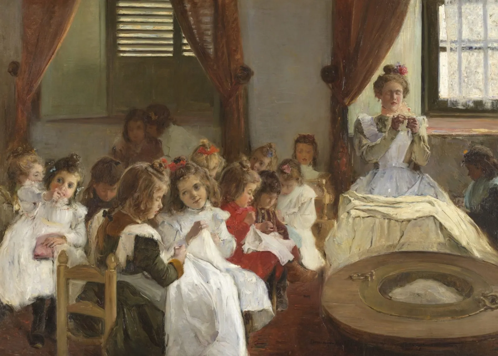

Visualising Data
Communicating findings through charts, maps and networks.
- Entry
- No. 005
- Part
- Workflow, step 4 of 4
- Status
- To come
Materials for this step will be entered here as the workshop approaches.

Record of the painting
- Artist
- Domingo Muñoz y Cuesta (1850–1935)
- Title
- La amiga (En Córdoba) (The Friend, in Córdoba)
- Date
- 1901
- Medium
- Oil on canvas, 146 × 200.5 cm
- Collection
- Museo Nacional del Prado, Madrid; on deposit at the Universidad de Jaén
- Number
- P006372
- Rights
- Public domain.
- Image
- Museo Nacional del Prado
Provenance
Acquired from the artist for the Museo de Arte Moderno, 1901; Museo de Arte Moderno, 1901–1971; Museo Nacional Centro de Arte Reina Sofía, 2016; Museo del Prado, from 2016, on deposit at the Universidad de Jaén
| Date | Event | Holder | Place |
|---|---|---|---|
| 1901 | Acquired from the artist | Museo de Arte Moderno | Madrid |
| 1901–1971 | Held | Museo de Arte Moderno | Madrid |
| 2016 | Transferred from | Museo Nacional Centro de Arte Reina Sofía | Madrid |
| 2016 | Entered; on deposit at the Universidad de Jaén | Museo del Prado | Madrid; Jaén |
Translated from the holding museum's record: Museo del Prado, La amiga (En Córdoba).